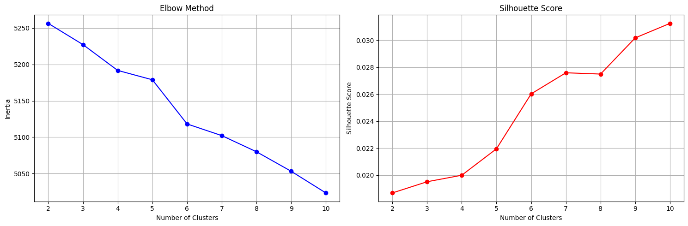
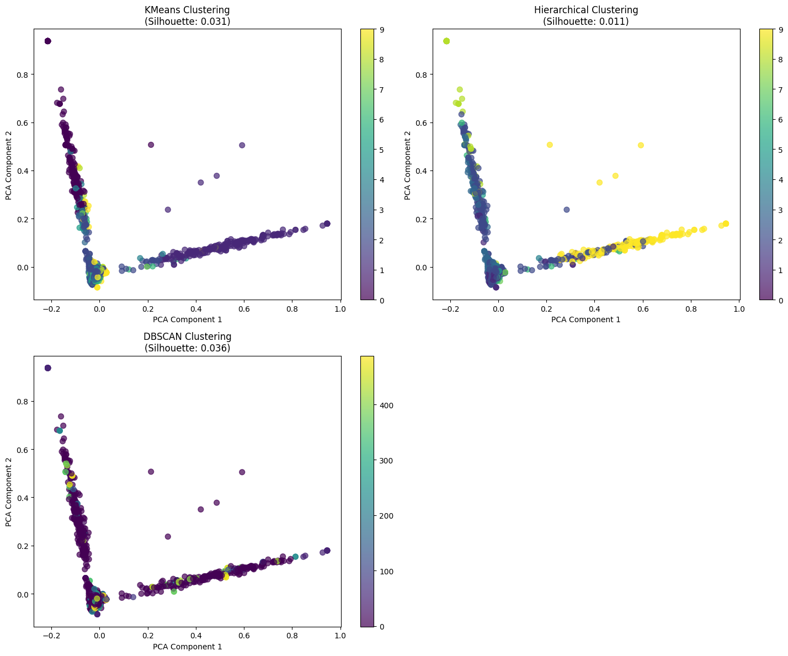
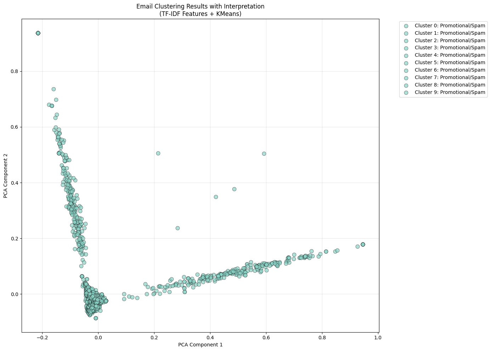

ldaklasifikasiAndClusteringUTS#
UTS PPW#
Nama : Wahyu Rohmatul Abidin#
Nim : 220411100198#
Tugas 1#
Lakukan analisa klasifikasikan berita dengan extraksi fitur model topik modelling dengan classifier naïve bayes dan SVM (data https://drive.google.com/file/d/1a776C4mmVbC-84gx_No0is9QDfpWFIme/view?usp=drive_link)
!pip install gensim
Collecting gensim
Downloading gensim-4.3.3-cp312-cp312-manylinux_2_17_x86_64.manylinux2014_x86_64.whl.metadata (8.1 kB)
Collecting numpy<2.0,>=1.18.5 (from gensim)
Downloading numpy-1.26.4-cp312-cp312-manylinux_2_17_x86_64.manylinux2014_x86_64.whl.metadata (61 kB)
━━━━━━━━━━━━━━━━━━━━━━━━━━━━━━━━━━━━━━━━ 61.0/61.0 kB 1.9 MB/s eta 0:00:00
?25hCollecting scipy<1.14.0,>=1.7.0 (from gensim)
Downloading scipy-1.13.1-cp312-cp312-manylinux_2_17_x86_64.manylinux2014_x86_64.whl.metadata (60 kB)
━━━━━━━━━━━━━━━━━━━━━━━━━━━━━━━━━━━━━━━━ 60.6/60.6 kB 3.1 MB/s eta 0:00:00
?25hRequirement already satisfied: smart-open>=1.8.1 in /usr/local/lib/python3.12/dist-packages (from gensim) (7.3.1)
Requirement already satisfied: wrapt in /usr/local/lib/python3.12/dist-packages (from smart-open>=1.8.1->gensim) (1.17.3)
Downloading gensim-4.3.3-cp312-cp312-manylinux_2_17_x86_64.manylinux2014_x86_64.whl (26.6 MB)
━━━━━━━━━━━━━━━━━━━━━━━━━━━━━━━━━━━━━━━━ 26.6/26.6 MB 62.1 MB/s eta 0:00:00
?25hDownloading numpy-1.26.4-cp312-cp312-manylinux_2_17_x86_64.manylinux2014_x86_64.whl (18.0 MB)
━━━━━━━━━━━━━━━━━━━━━━━━━━━━━━━━━━━━━━━━ 18.0/18.0 MB 97.9 MB/s eta 0:00:00
?25hDownloading scipy-1.13.1-cp312-cp312-manylinux_2_17_x86_64.manylinux2014_x86_64.whl (38.2 MB)
━━━━━━━━━━━━━━━━━━━━━━━━━━━━━━━━━━━━━━━━ 38.2/38.2 MB 21.6 MB/s eta 0:00:00
?25hInstalling collected packages: numpy, scipy, gensim
Attempting uninstall: numpy
Found existing installation: numpy 2.0.2
Uninstalling numpy-2.0.2:
Successfully uninstalled numpy-2.0.2
Attempting uninstall: scipy
Found existing installation: scipy 1.16.2
Uninstalling scipy-1.16.2:
Successfully uninstalled scipy-1.16.2
ERROR: pip's dependency resolver does not currently take into account all the packages that are installed. This behaviour is the source of the following dependency conflicts.
opencv-contrib-python 4.12.0.88 requires numpy<2.3.0,>=2; python_version >= "3.9", but you have numpy 1.26.4 which is incompatible.
thinc 8.3.6 requires numpy<3.0.0,>=2.0.0, but you have numpy 1.26.4 which is incompatible.
opencv-python 4.12.0.88 requires numpy<2.3.0,>=2; python_version >= "3.9", but you have numpy 1.26.4 which is incompatible.
opencv-python-headless 4.12.0.88 requires numpy<2.3.0,>=2; python_version >= "3.9", but you have numpy 1.26.4 which is incompatible.
tsfresh 0.21.1 requires scipy>=1.14.0; python_version >= "3.10", but you have scipy 1.13.1 which is incompatible.
Successfully installed gensim-4.3.3 numpy-1.26.4 scipy-1.13.1
1. Import Library yang Diperlukan#
import pandas as pd
import numpy as np
import re
from gensim import corpora, models
from gensim.models import LdaModel
from sklearn.feature_extraction.text import TfidfVectorizer
from sklearn.naive_bayes import MultinomialNB
from sklearn.svm import SVC
from sklearn.model_selection import train_test_split
from sklearn.metrics import classification_report, confusion_matrix, accuracy_score
from sklearn.preprocessing import LabelEncoder
import matplotlib.pyplot as plt
import seaborn as sns
from nltk.corpus import stopwords
import nltk
# Download stopwords jika belum
nltk.download('stopwords')
[nltk_data] Downloading package stopwords to /root/nltk_data...
[nltk_data] Unzipping corpora/stopwords.zip.
True
2. Load dan Eksplorasi Data#
# Load dataset
def load_data(file_path):
df = pd.read_csv(file_path)
print("Informasi Dataset:")
print(f"Shape: {df.shape}")
print(f"Kolom: {df.columns.tolist()}")
print(f"\nSample data:")
print(df.head())
# Cek distribusi kategori
print(f"\nDistribusi Kategori:")
print(df['kategori'].value_counts())
return df
# Load data
file_path = '/content/drive/MyDrive/Semester 7/PPW/UTS/BeritaUTS.csv' # Ganti dengan path Anda
df = load_data(file_path)
Informasi Dataset:
Shape: (1500, 6)
Kolom: ['No', 'judul', 'berita', 'tanggal', 'kategori', 'link']
Sample data:
No judul \
0 1 Airlangga Harap Kenaikan UMP Tingkatkan Daya B...
1 2 PT SIER Beri Penghargaan untuk 50 Tenant Terba...
2 3 Prabowo Bakal Bentuk Kementerian Penerimaan Ne...
3 4 Sinergi Kemenag & BPJS Ketenagakerjaan Lindung...
4 5 Pemerintah Segera Bentuk Satgas PHK Usai Tetap...
berita \
0 Menteri Koordinator (Menko) Bidang Perekonomia...
1 Dalam rangka memeriahkan hari jadi ke-50, PT S...
2 Wacana Presiden Prabowo Subianto akan membentu...
3 BPJS Ketenagakerjaan dan Kementerian Agama (Ke...
4 Pemerintah akan segera membentuk Satuan Tugas ...
tanggal kategori \
0 Minggu, 01 Des 2024 23:40 WIB Ekonomi
1 Minggu, 01 Des 2024 20:45 WIB Ekonomi
2 Minggu, 01 Des 2024 19:40 WIB Ekonomi
3 Minggu, 01 Des 2024 19:03 WIB Ekonomi
4 Minggu, 01 Des 2024 19:00 WIB Ekonomi
link
0 https://www.cnnindonesia.com/ekonomi/202412012...
1 https://www.cnnindonesia.com/ekonomi/202412012...
2 https://www.cnnindonesia.com/ekonomi/202412011...
3 https://www.cnnindonesia.com/ekonomi/202412011...
4 https://www.cnnindonesia.com/ekonomi/202412011...
Distribusi Kategori:
kategori
Ekonomi 375
Olahraga 375
Nasional 375
Internasional 375
Name: count, dtype: int64
3.Preprocessing Data#
def preprocess_text(text):
"""Preprocessing teks untuk LDA dan klasifikasi"""
if not isinstance(text, str):
return ""
# Gabungkan judul dan berita
if isinstance(text, str):
text = text.lower()
# Remove tanda baca, numbers, dan special characters
text = re.sub(r'[^a-zA-Z\s]', '', text)
# Remove extra whitespace
text = re.sub(r'\s+', ' ', text).strip()
return text
def tokenize_text(text):
"""Tokenisasi teks untuk LDA"""
tokens = text.split()
# Remove stopwords Indonesia
stop_words = set(stopwords.words('indonesian'))
tokens = [token for token in tokens if token not in stop_words and len(token) > 2]
return tokens
# Preprocessing data
print("Preprocessing data...")
df['teks_gabungan'] = df['judul'] + ' ' + df['berita'].fillna('')
df['teks_clean'] = df['teks_gabungan'].apply(preprocess_text)
df['tokens'] = df['teks_clean'].apply(tokenize_text)
print(f"Sample setelah preprocessing:")
print(df[['judul', 'kategori', 'teks_clean']].head())
Preprocessing data...
Sample setelah preprocessing:
judul kategori \
0 Airlangga Harap Kenaikan UMP Tingkatkan Daya B... Ekonomi
1 PT SIER Beri Penghargaan untuk 50 Tenant Terba... Ekonomi
2 Prabowo Bakal Bentuk Kementerian Penerimaan Ne... Ekonomi
3 Sinergi Kemenag & BPJS Ketenagakerjaan Lindung... Ekonomi
4 Pemerintah Segera Bentuk Satgas PHK Usai Tetap... Ekonomi
teks_clean
0 airlangga harap kenaikan ump tingkatkan daya b...
1 pt sier beri penghargaan untuk tenant terbaik ...
2 prabowo bakal bentuk kementerian penerimaan ne...
3 sinergi kemenag bpjs ketenagakerjaan lindungi ...
4 pemerintah segera bentuk satgas phk usai tetap...
4. Persiapan Untuk training#
# Split data
X = df['teks_clean']
y = df['kategori']
# Encode labels
label_encoder = LabelEncoder()
y_encoded = label_encoder.fit_transform(y)
print(f"Kategori: {label_encoder.classes_}")
print(f"Shape X: {X.shape}, y: {y_encoded.shape}")
# Split train-test
X_train, X_test, y_train, y_test = train_test_split(
X, y_encoded, test_size=0.3, random_state=42, stratify=y_encoded
)
print(f"Train size: {X_train.shape}, Test size: {X_test.shape}")
Kategori: ['Ekonomi' 'Internasional' 'Nasional' 'Olahraga']
Shape X: (1500,), y: (1500,)
Train size: (1050,), Test size: (450,)
5. Ekstraksi Fitur dengan LDA#
def prepare_lda_features(X_train, X_test, num_topics):
"""Mempersiapkan fitur LDA untuk training dan testing"""
# Tokenize untuk LDA
train_tokens = [text.split() for text in X_train]
test_tokens = [text.split() for text in X_test]
# Create dictionary
dictionary = corpora.Dictionary(train_tokens)
dictionary.filter_extremes(no_below=5, no_above=0.5)
# Create corpus
train_corpus = [dictionary.doc2bow(tokens) for tokens in train_tokens]
test_corpus = [dictionary.doc2bow(tokens) for tokens in test_tokens]
# Train LDA model
lda_model = LdaModel(
corpus=train_corpus,
id2word=dictionary,
num_topics=num_topics,
random_state=42,
passes=10,
alpha='auto'
)
# Convert documents to topic distributions
def get_topic_distribution(corpus, lda_model, num_topics):
features = []
for doc in corpus:
topic_dist = lda_model.get_document_topics(doc, minimum_probability=0)
topic_vector = [prob for _, prob in topic_dist]
features.append(topic_vector)
return np.array(features)
# Extract features
X_train_lda = get_topic_distribution(train_corpus, lda_model, num_topics)
X_test_lda = get_topic_distribution(test_corpus, lda_model, num_topics)
print(f"LDA Features - Train: {X_train_lda.shape}, Test: {X_test_lda.shape}")
return X_train_lda, X_test_lda, lda_model, dictionary
# Ekstraksi fitur LDA
print("Ekstraksi fitur dengan LDA...")
X_train_lda, X_test_lda, lda_model, dictionary = prepare_lda_features(X_train, X_test, num_topics=15)
Ekstraksi fitur dengan LDA...
LDA Features - Train: (1050, 15), Test: (450, 15)
X_train_lda.shape
(1050, 15)
X_train_lda
array([[3.08347791e-01, 1.13997165e-04, 1.92987645e-04, ...,
1.41992918e-04, 5.86755693e-01, 1.39208161e-04],
[2.16955916e-04, 1.62588549e-04, 9.97491837e-01, ...,
2.02517520e-04, 1.92274689e-04, 1.98545735e-04],
[2.81079527e-04, 2.10643309e-04, 9.96750534e-01, ...,
2.62373709e-04, 2.49103497e-04, 2.57228035e-04],
...,
[2.87380331e-04, 2.15365173e-04, 3.64594714e-04, ...,
2.68255186e-04, 2.54687504e-04, 1.81650892e-01],
[1.63092054e-02, 2.24162810e-04, 4.46541846e-01, ...,
2.79213360e-04, 2.65091454e-04, 2.73737416e-04],
[3.25672678e-04, 2.44061754e-04, 4.13176080e-04, ...,
3.03999142e-04, 2.88623647e-04, 2.98037106e-04]], dtype=float32)
# def compute_coherence_values(dictionary, corpus, texts, limit, start=2, step=3):
# coherence_values = []
# model_list = []
# for num_topics in range(start, limit, step):
# model=gensim.models.LdaMulticore(corpus=corpus, id2word=dictionary, num_topics=num_topics)
# model_list.append(model)
# coherencemodel = CoherenceModel(model=model, texts=texts, dictionary=dictionary, coherence='c_v')
# coherence_values.append(coherencemodel.get_coherence())
# return model_list, coherence_values
# model_list, coherence_values = compute_coherence_values(dictionary=dictionary, texts=train_corpus, start=2, limit=40, step=6)
6. Training dengan naive bayes#
def train_naive_bayes(X_train_lda, y_train):
"""Training Naive Bayes dengan kedua jenis fitur"""
# NB dengan fitur LDA
nb_lda = MultinomialNB()
nb_lda.fit(X_train_lda, y_train)
# # NB dengan fitur TF-IDF
# nb_tfidf = MultinomialNB()
# nb_tfidf.fit(X_train_tfidf, y_train)
return nb_lda
print("Training Naive Bayes...")
nb_lda = train_naive_bayes(X_train_lda, y_train)
Training Naive Bayes...
7. Training dengan SVM#
def train_svm(X_train_lda, y_train):
"""Training SVM dengan kedua jenis fitur"""
# SVM dengan fitur LDA
svm_lda = SVC(kernel='linear', random_state=42, probability=True)
svm_lda.fit(X_train_lda, y_train)
return svm_lda
print("Training SVM...")
svm_lda = train_svm(X_train_lda, y_train)
Training SVM...
8. Evaluasi Model#
def evaluate_model(model, X_test, y_test, model_name, feature_type):
"""Evaluasi model dan return metrics"""
y_pred = model.predict(X_test)
accuracy = accuracy_score(y_test, y_pred)
print(f"\n{'='*50}")
print(f"EVALUASI: {model_name} dengan {feature_type}")
print(f"{'='*50}")
print(f"Accuracy: {accuracy:.4f}")
print("\nClassification Report:")
print(classification_report(y_test, y_pred, target_names=label_encoder.classes_))
return accuracy, y_pred
def plot_confusion_matrix(y_true, y_pred, model_name, feature_type):
"""Plot confusion matrix"""
cm = confusion_matrix(y_true, y_pred)
plt.figure(figsize=(8, 6))
sns.heatmap(cm, annot=True, fmt='d', cmap='Blues',
xticklabels=label_encoder.classes_,
yticklabels=label_encoder.classes_)
plt.title(f'Confusion Matrix - {model_name} ({feature_type})')
plt.ylabel('True Label')
plt.xlabel('Predicted Label')
plt.show()
# Evaluasi semua model
results = {}
print("EVALUASI SEMUA MODEL")
print("="*60)
# Naive Bayes dengan LDA
acc_nb_lda, y_pred_nb_lda = evaluate_model(nb_lda, X_test_lda, y_test, "Naive Bayes", "LDA Features")
results['NB_LDA'] = acc_nb_lda
plot_confusion_matrix(y_test, y_pred_nb_lda, "Naive Bayes", "LDA Features")
# Naive Bayes dengan TF-IDF
# acc_nb_tfidf, y_pred_nb_tfidf = evaluate_model(nb_tfidf, X_test_tfidf, y_test, "Naive Bayes", "TF-IDF Features")
# results['NB_TFIDF'] = acc_nb_tfidf
# plot_confusion_matrix(y_test, y_pred_nb_tfidf, "Naive Bayes", "TF-IDF Features")
# SVM dengan LDA
acc_svm_lda, y_pred_svm_lda = evaluate_model(svm_lda, X_test_lda, y_test, "SVM", "LDA Features")
results['SVM_LDA'] = acc_svm_lda
plot_confusion_matrix(y_test, y_pred_svm_lda, "SVM", "LDA Features")
# SVM dengan TF-IDF
# acc_svm_tfidf, y_pred_svm_tfidf = evaluate_model(svm_tfidf, X_test_tfidf, y_test, "SVM", "TF-IDF Features")
# results['SVM_TFIDF'] = acc_svm_tfidf
# plot_confusion_matrix(y_test, y_pred_svm_tfidf, "SVM", "TF-IDF Features")
EVALUASI SEMUA MODEL
============================================================
==================================================
EVALUASI: Naive Bayes dengan LDA Features
==================================================
Accuracy: 0.8978
Classification Report:
precision recall f1-score support
Ekonomi 0.84 0.96 0.89 113
Internasional 0.92 0.90 0.91 112
Nasional 0.86 0.75 0.80 113
Olahraga 0.98 0.98 0.98 112
accuracy 0.90 450
macro avg 0.90 0.90 0.90 450
weighted avg 0.90 0.90 0.90 450
==================================================
EVALUASI: SVM dengan LDA Features
==================================================
Accuracy: 0.8933
Classification Report:
precision recall f1-score support
Ekonomi 0.85 0.90 0.88 113
Internasional 0.94 0.90 0.92 112
Nasional 0.81 0.79 0.80 113
Olahraga 0.98 0.98 0.98 112
accuracy 0.89 450
macro avg 0.89 0.89 0.89 450
weighted avg 0.89 0.89 0.89 450
def compare_models(results):
"""Perbandingan performa semua model"""
print("\n" + "="*60)
print("PERBANDINGAN PERFORMAN SEMUA MODEL")
print("="*60)
# Create comparison dataframe
comparison_df = pd.DataFrame({
'Model': list(results.keys()),
'Accuracy': list(results.values())
}).sort_values('Accuracy', ascending=False)
print(comparison_df)
# Plot comparison
plt.figure(figsize=(10, 6))
models = list(results.keys())
accuracies = list(results.values())
bars = plt.bar(models, accuracies, color=['skyblue', 'lightcoral', 'lightgreen', 'gold'])
plt.title('Perbandingan Akurasi Model')
plt.ylabel('Accuracy')
plt.xlabel('Model')
plt.xticks(rotation=45)
plt.ylim(0, 1)
# Add value labels on bars
for bar, accuracy in zip(bars, accuracies):
plt.text(bar.get_x() + bar.get_width()/2, bar.get_height() + 0.01,
f'{accuracy:.4f}', ha='center', va='bottom')
plt.tight_layout()
plt.show()
return comparison_df
# Bandingkan semua model
comparison_df = compare_models(results)
============================================================
PERBANDINGAN PERFORMAN SEMUA MODEL
============================================================
Model Accuracy
0 NB_LDA 0.897778
1 SVM_LDA 0.893333
Tugas 2#
import pandas as pd
import numpy as np
import re
from sklearn.feature_extraction.text import TfidfVectorizer
from sklearn.cluster import KMeans, DBSCAN, AgglomerativeClustering
from sklearn.decomposition import PCA
from sklearn.metrics import silhouette_score, calinski_harabasz_score
from sklearn.preprocessing import StandardScaler
import matplotlib.pyplot as plt
import seaborn as sns
from collections import Counter
import nltk
from nltk.corpus import stopwords
from nltk.stem import PorterStemmer
from nltk.tokenize import word_tokenize
# Download resources jika belum
nltk.download('punkt')
nltk.download('punkt_tab')
nltk.download('stopwords')
nltk.download('wordnet')
# Data yang Anda berikan
df = pd.read_csv("/content/drive/MyDrive/Semester 7/PPW/UTS/spam.csv", encoding='latin1')
df = df.iloc[:, :2] # Ambil 2 kolom pertama
print(df.head())
[nltk_data] Downloading package punkt to /root/nltk_data...
[nltk_data] Package punkt is already up-to-date!
[nltk_data] Downloading package punkt_tab to /root/nltk_data...
[nltk_data] Unzipping tokenizers/punkt_tab.zip.
[nltk_data] Downloading package stopwords to /root/nltk_data...
[nltk_data] Package stopwords is already up-to-date!
[nltk_data] Downloading package wordnet to /root/nltk_data...
id Text
0 1 Go until jurong point, crazy.. Available only ...
1 2 Ok lar... Joking wif u oni...
2 3 Free entry in 2 a wkly comp to win FA Cup fina...
3 4 U dun say so early hor... U c already then say...
4 5 Nah I don't think he goes to usf, he lives aro...
texts = df['Text']
print(texts.head())
0 Go until jurong point, crazy.. Available only ...
1 Ok lar... Joking wif u oni...
2 Free entry in 2 a wkly comp to win FA Cup fina...
3 U dun say so early hor... U c already then say...
4 Nah I don't think he goes to usf, he lives aro...
Name: Text, dtype: object
1. Preprocessing data#
def preprocess_email(text):
"""Preprocessing khusus untuk data email"""
if not isinstance(text, str):
return ""
# Case folding
text = text.lower()
# Remove special characters, numbers, but keep basic punctuation
text = re.sub(r'[^\w\s\.\?\!]', ' ', text)
text = re.sub(r'\d+', ' ', text)
# Remove extra whitespace
text = re.sub(r'\s+', ' ', text).strip()
return text
def advanced_preprocessing(text):
"""Preprocessing lebih mendalam untuk clustering"""
# Basic cleaning
text = preprocess_email(text)
# Tokenization
tokens = word_tokenize(text)
# Stopword removal
stop_words = set(stopwords.words('english'))
tokens = [token for token in tokens if token not in stop_words and len(token) > 2]
# Stemming
stemmer = PorterStemmer()
tokens = [stemmer.stem(token) for token in tokens]
return ' '.join(tokens)
# Preprocessing data
emails = [preprocess_email(email) for email in texts if isinstance(email, str)]
advanced_emails = [advanced_preprocessing(email) for email in texts if isinstance(email, str)]
print("Sample setelah preprocessing:")
for i in range(3):
print(f"Original: {texts[i][:50]}...")
print(f"Cleaned: {emails[i][:50]}...")
print(f"Advanced: {advanced_emails[i][:50]}...")
print("-" * 50)
Sample setelah preprocessing:
Original: Go until jurong point, crazy.. Available only in b...
Cleaned: go until jurong point crazy.. available only in bu...
Advanced: jurong point crazi avail bugi great world buffet ....
--------------------------------------------------
Original: Ok lar... Joking wif u oni......
Cleaned: ok lar... joking wif u oni......
Advanced: lar ... joke wif oni ......
--------------------------------------------------
Original: Free entry in 2 a wkly comp to win FA Cup final tk...
Cleaned: free entry in a wkly comp to win fa cup final tkts...
Advanced: free entri wkli comp win cup final tkt may text re...
--------------------------------------------------
2. Eksplorasi Data#
def explore_data(emails):
"""Eksplorasi karakteristik data"""
# Panjang teks
text_lengths = [len(email.split()) for email in emails]
# Kata unik
all_words = ' '.join(emails).split()
word_freq = Counter(all_words)
print("=== EKSPLORASI DATA ===")
print(f"Total emails: {len(emails)}")
print(f"Average words per email: {np.mean(text_lengths):.1f}")
print(f"Total unique words: {len(word_freq)}")
print(f"Most common words: {word_freq.most_common(10)}")
# Visualisasi distribusi panjang teks
plt.figure(figsize=(12, 4))
plt.subplot(1, 2, 1)
plt.hist(text_lengths, bins=20, alpha=0.7, color='skyblue')
plt.xlabel('Number of Words')
plt.ylabel('Frequency')
plt.title('Distribution of Email Length')
plt.subplot(1, 2, 2)
common_words = word_freq.most_common(15)
words, counts = zip(*common_words)
plt.barh(words, counts, color='lightcoral')
plt.xlabel('Frequency')
plt.title('Most Common Words')
plt.tight_layout()
plt.show()
return text_lengths, word_freq
# Eksplorasi data
text_lengths, word_freq = explore_data(emails)
=== EKSPLORASI DATA ===
Total emails: 5572
Average words per email: 15.7
Total unique words: 10858
Most common words: [('i', 2896), ('to', 2229), ('you', 2062), ('a', 1441), ('the', 1329), ('u', 1074), ('and', 972), ('in', 877), ('is', 875), ('my', 755)]
3. Ekstraksi Fitur dengan TF-IDF#
def extract_features(emails, max_features):
"""Ekstraksi fitur menggunakan TF-IDF"""
# TF-IDF Vectorizer
tfidf_vectorizer = TfidfVectorizer(
max_features=max_features,
stop_words='english',
min_df=2, # Ignore terms that appear in less than 2 documents
max_df=0.8, # Ignore terms that appear in more than 80% of documents
ngram_range=(1, 2) # Use unigrams and bigrams
)
# Fit and transform
tfidf_matrix = tfidf_vectorizer.fit_transform(emails)
print(f"TF-IDF Matrix Shape: {tfidf_matrix.shape}")
print(f"Feature names sample: {tfidf_vectorizer.get_feature_names_out()[:10]}")
return tfidf_matrix, tfidf_vectorizer
# Ekstraksi fitur
tfidf_matrix, vectorizer = extract_features(emails,max_features=100)
TF-IDF Matrix Shape: (5572, 100)
Feature names sample: ['amp' 'ask' 'babe' 'box' 'buy' 'care' 'cash' 'claim' 'com' 'come']
def extract_features(emails, max_features=1000):
"""Ekstraksi fitur menggunakan TF-IDF"""
# TF-IDF Vectorizer
tfidf_vectorizer = TfidfVectorizer(
max_features=max_features,
stop_words='english',
min_df=2, # Ignore terms that appear in less than 2 documents
max_df=0.8, # Ignore terms that appear in more than 80% of documents
ngram_range=(1, 2) # Use unigrams and bigrams
)
# Fit and transform
tfidf_matrix = tfidf_vectorizer.fit_transform(emails)
print(f"TF-IDF Matrix Shape: {tfidf_matrix.shape}")
print(f"Feature names sample: {tfidf_vectorizer.get_feature_names_out()[:10]}")
return tfidf_matrix, tfidf_vectorizer
# Ekstraksi fitur
tfidf_matrix, vectorizer = extract_features(emails)
TF-IDF Matrix Shape: (5572, 1000)
Feature names sample: ['abiola' 'able' 'abt' 'ac' 'account' 'account statement' 'actually'
'address' 'admirer' 'aft']
4. Menentukan Jumlah Cluster Optimal#
def find_optimal_clusters(tfidf_matrix, max_k=10):
"""Menentukan jumlah cluster optimal menggunakan elbow method dan silhouette score"""
inertias = []
silhouette_scores = []
k_range = range(2, max_k + 1)
for k in k_range:
# KMeans clustering
kmeans = KMeans(n_clusters=k, random_state=42, n_init=10)
cluster_labels = kmeans.fit_predict(tfidf_matrix)
# Calculate metrics
inertias.append(kmeans.inertia_)
# Silhouette score (hitung jika lebih dari 1 cluster dan tidak semua data di satu cluster)
if len(set(cluster_labels)) > 1:
silhouette_scores.append(silhouette_score(tfidf_matrix, cluster_labels))
else:
silhouette_scores.append(0)
# Plot results
fig, (ax1, ax2) = plt.subplots(1, 2, figsize=(15, 5))
# Elbow curve
ax1.plot(k_range, inertias, 'bo-')
ax1.set_xlabel('Number of Clusters')
ax1.set_ylabel('Inertia')
ax1.set_title('Elbow Method')
ax1.grid(True)
# Silhouette scores
ax2.plot(k_range, silhouette_scores, 'ro-')
ax2.set_xlabel('Number of Clusters')
ax2.set_ylabel('Silhouette Score')
ax2.set_title('Silhouette Score')
ax2.grid(True)
plt.tight_layout()
plt.show()
# Find optimal k
optimal_k = k_range[np.argmax(silhouette_scores)]
print(f"Optimal number of clusters (based on silhouette): {optimal_k}")
return optimal_k, inertias, silhouette_scores
# Cari jumlah cluster optimal
optimal_k, inertias, silhouette_scores = find_optimal_clusters(tfidf_matrix)

Optimal number of clusters (based on silhouette): 10
5. Clustering dengan beberapa algoritma#
def perform_clustering(tfidf_matrix, n_clusters=4):
"""Melakukan clustering dengan berbagai algoritma"""
results = {}
# Convert to dense array for algorithms that don't support sparse matrix
X_dense = tfidf_matrix.toarray()
# 1. KMeans
print("Running KMeans clustering...")
kmeans = KMeans(n_clusters=n_clusters, random_state=42, n_init=10)
kmeans_labels = kmeans.fit_predict(tfidf_matrix)
results['KMeans'] = kmeans_labels
# 2. Hierarchical Clustering
print("Running Hierarchical clustering...")
hierarchical = AgglomerativeClustering(n_clusters=n_clusters)
hierarchical_labels = hierarchical.fit_predict(X_dense)
results['Hierarchical'] = hierarchical_labels
# 3. DBSCAN
print("Running DBSCAN clustering...")
dbscan = DBSCAN(eps=0.5, min_samples=2)
dbscan_labels = dbscan.fit_predict(X_dense)
results['DBSCAN'] = dbscan_labels
return results
# Lakukan clustering dengan berbagai algoritma
clustering_results = perform_clustering(tfidf_matrix, n_clusters=optimal_k)
Running KMeans clustering...
Running Hierarchical clustering...
Running DBSCAN clustering...
Evaluasi Clustering
def evaluate_clustering(tfidf_matrix, clustering_results):
"""Evaluasi hasil clustering"""
evaluation = {}
X_dense = tfidf_matrix.toarray()
for method, labels in clustering_results.items():
# Skip evaluation if only one cluster or too many noise points
unique_labels = set(labels)
n_clusters = len(unique_labels) - (1 if -1 in labels else 0)
if n_clusters > 1 and len(unique_labels) < len(labels) // 2:
try:
silhouette = silhouette_score(tfidf_matrix, labels)
calinski = calinski_harabasz_score(X_dense, labels)
except:
silhouette = -1
calinski = -1
else:
silhouette = -1
calinski = -1
# Count cluster distribution
cluster_counts = Counter(labels)
evaluation[method] = {
'silhouette_score': silhouette,
'calinski_harabasz_score': calinski,
'n_clusters': n_clusters,
'cluster_distribution': cluster_counts
}
# Print evaluation results
print("=== CLUSTERING EVALUATION ===")
for method, metrics in evaluation.items():
print(f"\n{method}:")
print(f" Silhouette Score: {metrics['silhouette_score']:.3f}")
print(f" Calinski-Harabasz Score: {metrics['calinski_harabasz_score']:.3f}")
print(f" Number of Clusters: {metrics['n_clusters']}")
print(f" Cluster Distribution: {dict(metrics['cluster_distribution'])}")
return evaluation
# Evaluasi clustering
evaluation_results = evaluate_clustering(tfidf_matrix, clustering_results)
=== CLUSTERING EVALUATION ===
KMeans:
Silhouette Score: 0.031
Calinski-Harabasz Score: 36.797
Number of Clusters: 10
Cluster Distribution: {2: 3535, 0: 199, 3: 585, 9: 165, 5: 159, 6: 193, 1: 218, 7: 138, 8: 202, 4: 178}
Hierarchical:
Silhouette Score: 0.011
Calinski-Harabasz Score: 26.422
Number of Clusters: 10
Cluster Distribution: {2: 3970, 1: 756, 6: 107, 8: 58, 3: 383, 9: 156, 5: 41, 0: 38, 4: 45, 7: 18}
DBSCAN:
Silhouette Score: 0.036
Calinski-Harabasz Score: 3.774
Number of Clusters: 489
Cluster Distribution: {-1: 3930, 0: 2, 1: 2, 2: 5, 3: 2, 4: 2, 5: 2, 6: 2, 7: 3, 8: 4, 9: 8, 10: 3, 11: 5, 12: 3, 13: 39, 14: 10, 15: 3, 16: 3, 17: 2, 18: 2, 19: 5, 20: 194, 21: 2, 22: 3, 23: 2, 24: 2, 25: 10, 26: 2, 27: 5, 28: 3, 29: 4, 30: 3, 31: 4, 32: 3, 33: 8, 34: 4, 35: 2, 36: 5, 37: 2, 38: 2, 39: 3, 40: 5, 41: 2, 42: 6, 43: 3, 44: 2, 45: 2, 46: 4, 47: 3, 48: 11, 49: 2, 50: 29, 51: 2, 52: 2, 53: 2, 54: 2, 55: 3, 56: 2, 57: 2, 58: 3, 59: 8, 60: 3, 61: 3, 62: 2, 63: 4, 64: 3, 65: 8, 66: 2, 67: 4, 68: 7, 69: 2, 70: 4, 71: 3, 72: 2, 73: 7, 74: 2, 75: 6, 76: 2, 77: 12, 78: 3, 79: 3, 80: 4, 81: 2, 82: 2, 83: 3, 84: 14, 85: 2, 86: 2, 87: 3, 88: 2, 89: 2, 90: 3, 91: 3, 92: 4, 93: 2, 94: 2, 95: 3, 96: 6, 97: 4, 98: 3, 99: 2, 100: 2, 101: 2, 102: 4, 103: 2, 104: 8, 105: 3, 106: 3, 107: 2, 108: 2, 109: 3, 110: 3, 111: 2, 112: 4, 113: 5, 114: 3, 115: 2, 116: 4, 117: 3, 118: 4, 119: 2, 120: 4, 121: 2, 122: 2, 123: 12, 124: 3, 125: 3, 126: 3, 127: 7, 128: 3, 129: 2, 130: 3, 131: 2, 132: 4, 133: 2, 134: 2, 135: 3, 136: 4, 137: 2, 138: 2, 139: 2, 140: 2, 141: 2, 142: 2, 143: 4, 144: 2, 145: 2, 146: 3, 147: 2, 148: 2, 149: 3, 150: 2, 151: 4, 152: 2, 153: 5, 154: 2, 155: 2, 156: 2, 157: 3, 158: 3, 159: 4, 160: 2, 161: 2, 162: 2, 163: 2, 164: 3, 165: 3, 166: 2, 167: 3, 168: 2, 169: 4, 170: 7, 171: 2, 172: 3, 173: 3, 174: 4, 175: 3, 176: 3, 177: 2, 178: 3, 179: 3, 180: 2, 181: 10, 182: 2, 183: 3, 184: 2, 185: 2, 186: 2, 187: 2, 188: 3, 189: 2, 190: 3, 191: 5, 192: 2, 193: 4, 194: 2, 195: 7, 196: 2, 197: 7, 198: 2, 199: 2, 200: 2, 201: 3, 202: 2, 203: 2, 204: 3, 205: 2, 206: 4, 207: 4, 208: 2, 209: 2, 210: 2, 211: 2, 212: 2, 213: 2, 214: 5, 215: 2, 216: 2, 217: 3, 218: 3, 219: 3, 220: 2, 221: 2, 222: 5, 223: 2, 224: 2, 225: 6, 226: 5, 227: 3, 228: 3, 229: 2, 230: 3, 231: 4, 232: 2, 233: 2, 234: 2, 235: 4, 236: 3, 237: 2, 238: 3, 239: 2, 240: 2, 241: 2, 242: 4, 243: 7, 244: 2, 245: 2, 246: 4, 247: 2, 248: 2, 249: 3, 250: 3, 251: 2, 252: 2, 253: 2, 254: 5, 255: 3, 256: 2, 257: 2, 258: 7, 259: 3, 260: 2, 261: 2, 262: 3, 263: 2, 264: 2, 265: 2, 266: 3, 267: 3, 268: 5, 269: 6, 270: 2, 271: 2, 272: 3, 273: 5, 274: 4, 275: 2, 276: 4, 277: 2, 278: 2, 279: 3, 280: 3, 281: 4, 282: 2, 283: 2, 284: 2, 285: 2, 286: 4, 287: 2, 288: 3, 289: 2, 290: 4, 291: 2, 292: 2, 293: 2, 294: 2, 295: 2, 296: 2, 297: 2, 298: 2, 299: 2, 300: 2, 301: 2, 302: 2, 303: 3, 304: 2, 305: 2, 306: 2, 307: 2, 308: 2, 309: 6, 310: 3, 311: 2, 312: 2, 313: 2, 314: 2, 315: 3, 316: 3, 317: 2, 318: 2, 319: 3, 320: 2, 321: 2, 322: 3, 323: 5, 324: 4, 325: 3, 326: 3, 327: 2, 328: 2, 329: 2, 330: 2, 331: 6, 332: 2, 333: 3, 334: 3, 335: 2, 336: 2, 337: 3, 338: 2, 339: 2, 340: 2, 341: 2, 342: 2, 343: 2, 344: 2, 345: 6, 346: 2, 347: 2, 348: 2, 349: 2, 350: 4, 351: 2, 352: 3, 353: 2, 354: 2, 355: 2, 356: 2, 357: 2, 358: 2, 359: 4, 360: 2, 361: 2, 362: 3, 363: 7, 364: 2, 365: 3, 366: 2, 367: 2, 368: 2, 369: 2, 370: 2, 371: 2, 372: 2, 373: 2, 374: 2, 375: 2, 376: 3, 377: 2, 378: 2, 379: 2, 380: 2, 381: 3, 382: 3, 383: 3, 384: 2, 385: 2, 386: 3, 387: 2, 388: 4, 389: 2, 390: 3, 391: 2, 392: 2, 393: 2, 394: 2, 395: 2, 396: 2, 397: 2, 398: 2, 399: 4, 400: 2, 401: 2, 402: 2, 403: 3, 404: 2, 405: 2, 406: 2, 407: 2, 408: 2, 409: 2, 410: 2, 411: 2, 412: 2, 413: 2, 414: 3, 415: 2, 416: 2, 417: 3, 418: 2, 419: 2, 420: 3, 421: 3, 422: 2, 423: 2, 424: 3, 425: 2, 426: 2, 427: 2, 428: 5, 429: 2, 430: 3, 431: 4, 432: 2, 433: 2, 434: 2, 435: 2, 436: 2, 437: 2, 438: 2, 439: 3, 440: 2, 441: 2, 442: 2, 443: 2, 444: 2, 445: 2, 446: 2, 447: 2, 448: 2, 449: 2, 450: 2, 451: 2, 452: 2, 453: 2, 454: 2, 455: 2, 456: 2, 457: 2, 458: 2, 459: 2, 460: 2, 461: 2, 462: 2, 463: 2, 464: 2, 465: 2, 466: 2, 467: 2, 468: 2, 469: 2, 470: 2, 471: 2, 472: 2, 473: 2, 474: 2, 475: 2, 476: 2, 477: 2, 478: 2, 479: 2, 480: 2, 481: 2, 482: 2, 483: 2, 484: 2, 485: 2, 486: 2, 487: 2, 488: 2}
7. Visualisasi hasil clustering#
def visualize_clusters(tfidf_matrix, clustering_results, emails):
"""Visualisasi hasil clustering dengan PCA"""
# Reduce dimensions untuk visualisasi
pca = PCA(n_components=2, random_state=42)
X_pca = pca.fit_transform(tfidf_matrix.toarray())
# Plot untuk setiap metode clustering
fig, axes = plt.subplots(2, 2, figsize=(15, 12))
axes = axes.ravel()
methods = list(clustering_results.keys())
for i, method in enumerate(methods):
labels = clustering_results[method]
scatter = axes[i].scatter(X_pca[:, 0], X_pca[:, 1],
c=labels, cmap='viridis', alpha=0.7, s=50)
axes[i].set_title(f'{method} Clustering\n(Silhouette: {evaluation_results[method]["silhouette_score"]:.3f})')
axes[i].set_xlabel('PCA Component 1')
axes[i].set_ylabel('PCA Component 2')
plt.colorbar(scatter, ax=axes[i])
# Hide unused subplots
for i in range(len(methods), len(axes)):
axes[i].set_visible(False)
plt.tight_layout()
plt.show()
return X_pca
# Visualisasi hasil
X_pca = visualize_clusters(tfidf_matrix, clustering_results, emails)

8. Analisis Cluster dengan KMeans#
def analyze_clusters_kmeans(tfidf_matrix, vectorizer, emails, n_clusters=4):
"""Analisis mendalam cluster menggunakan KMeans"""
# Fit KMeans
kmeans = KMeans(n_clusters=n_clusters, random_state=42, n_init=10)
kmeans_labels = kmeans.fit_predict(tfidf_matrix)
# Get feature names
feature_names = vectorizer.get_feature_names_out()
print("=== ANALISIS CLUSTER KMEANS ===")
# Analisis setiap cluster
for cluster_id in range(n_clusters):
# Get indices of documents in this cluster
cluster_indices = np.where(kmeans_labels == cluster_id)[0]
print(f"\n📊 CLUSTER {cluster_id}:")
print(f" Jumlah dokumen: {len(cluster_indices)}")
print(f" Persentase: {len(cluster_indices)/len(emails)*100:.1f}%")
# Get top terms for this cluster
cluster_tfidf = tfidf_matrix[cluster_indices]
cluster_tfidf_sum = np.asarray(cluster_tfidf.sum(axis=0)).flatten()
top_term_indices = cluster_tfidf_sum.argsort()[-10:][::-1]
top_terms = [feature_names[i] for i in top_term_indices]
print(f" Top 10 Terms: {', '.join(top_terms)}")
# Show sample documents
print(f" Sample Documents:")
for i, idx in enumerate(cluster_indices[:3]): # Show first 3 documents
sample_text = emails[idx][:100] + "..." if len(emails[idx]) > 100 else emails[idx]
print(f" {i+1}. {sample_text}")
return kmeans_labels
# Analisis cluster dengan KMeans
kmeans_labels = analyze_clusters_kmeans(tfidf_matrix, vectorizer, emails, n_clusters=optimal_k)
=== ANALISIS CLUSTER KMEANS ===
📊 CLUSTER 0:
Jumlah dokumen: 199
Persentase: 3.6%
Top 10 Terms: ok, ok lor, lor, thanx, ur, leave, said, yup, time, ask
Sample Documents:
1. ok lar... joking wif u oni...
2. yup... ok i go home look at the timings then i msg ì_ again... xuhui going to learn on nd may too bu...
3. ok i am on the way to home hi hi
📊 CLUSTER 1:
Jumlah dokumen: 218
Persentase: 3.9%
Top 10 Terms: gt, lt, lt gt, gt min, lt decimal, decimal gt, decimal, like lt, like, ll
Sample Documents:
1. great! i hope you like your man well endowed. i am lt gt inches...
2. a gram usually runs like lt gt a half eighth is smarter though and gets you almost a whole second gr...
3. do you know what mallika sherawat did yesterday? find out now lt url gt
📊 CLUSTER 2:
Jumlah dokumen: 3535
Persentase: 63.4%
Top 10 Terms: just, got, going, good, da, time, home, lor, want, day
Sample Documents:
1. go until jurong point crazy.. available only in bugis n great world la e buffet... cine there got am...
2. u dun say so early hor... u c already then say...
3. nah i don t think he goes to usf he lives around here though
📊 CLUSTER 3:
Jumlah dokumen: 585
Persentase: 10.5%
Top 10 Terms: ur, free, text, txt, send, stop, reply, mobile, www, nokia
Sample Documents:
1. free entry in a wkly comp to win fa cup final tkts st may . text fa to to receive entry question std...
2. had your mobile months or more? u r entitled to update to the latest colour mobiles with camera for ...
3. six chances to win cash! from to pounds txt csh and send to . cost p day days tsandcs apply reply hl...
📊 CLUSTER 4:
Jumlah dokumen: 178
Persentase: 3.2%
Top 10 Terms: come, home, want come, tomorrow, come tomorrow, time, want, ì_, come home, ok
Sample Documents:
1. sorry my roommates took forever it ok if i come by now?
2. ela kano. il download come wen ur free..
3. why you dint come with us.
📊 CLUSTER 5:
Jumlah dokumen: 159
Persentase: 2.9%
Top 10 Terms: love, babe, day, amp, hope, good, miss, goes, life, ya
Sample Documents:
1. did you catch the bus ? are you frying an egg ? did you make a tea? are you eating your mom s left o...
2. did i forget to tell you ? i want you i need you i crave you ... but most of all ... i love you my s...
3. umma my life and vava umma love you lot dear
📊 CLUSTER 6:
Jumlah dokumen: 193
Persentase: 3.5%
Top 10 Terms: know, let know, let, don know, don, dont know, dont, need, want, ll
Sample Documents:
1. i m back amp we re packing the car now i ll let you know if there s room
2. oops i ll let you know when my roommate s done
3. u don t know how stubborn i am. i didn t even want to go to the hospital. i kept telling mark i m no...
📊 CLUSTER 7:
Jumlah dokumen: 138
Persentase: 2.5%
Top 10 Terms: hey, morning, good morning, good, day, meet, great, tmr, going, sat
Sample Documents:
1. k fyi x has a ride early tomorrow morning but he s crashing at our place tonight
2. hey girl. how r u? hope u r well me an del r bak! again long time no c! give me a call sum time from...
3. is your hamster dead? hey so tmr i meet you at pm orchard mrt?
📊 CLUSTER 8:
Jumlah dokumen: 202
Persentase: 3.6%
Top 10 Terms: ll, sorry, later, ll later, sorry ll, meeting, yeah, aight, text, just
Sample Documents:
1. wow. i never realized that you were so embarassed by your accomodations. i thought you liked it sinc...
2. sorry i ll call later in meeting.
3. sorry i ll call later
📊 CLUSTER 9:
Jumlah dokumen: 165
Persentase: 3.0%
Top 10 Terms: like, just, feel like, dat, feel, think, dun, know, sounds, ok
Sample Documents:
1. freemsg hey there darling it s been week s now and no word back! i d like some fun you up for it sti...
2. even my brother is not like to speak with me. they treat me like aids patent.
3. ahhh. work. i vaguely remember that! what does it feel like? lol
9. Interpretasi Cluster#
def interpret_clusters(kmeans_labels, emails, tfidf_matrix, vectorizer):
"""Interpretasi dan penamaan cluster berdasarkan konten"""
feature_names = vectorizer.get_feature_names_out()
n_clusters = len(set(kmeans_labels))
cluster_interpretation = {}
print("\n=== INTERPRETASI CLUSTER ===")
for cluster_id in range(n_clusters):
cluster_indices = np.where(kmeans_labels == cluster_id)[0]
# Analyze content
cluster_docs = [emails[i] for i in cluster_indices]
cluster_tfidf = tfidf_matrix[cluster_indices]
# Get distinctive terms
cluster_tfidf_sum = np.asarray(cluster_tfidf.sum(axis=0)).flatten()
overall_tfidf_sum = np.asarray(tfidf_matrix.sum(axis=0)).flatten()
# Calculate term distinctiveness (TF-IDF ratio)
term_ratio = cluster_tfidf_sum / (overall_tfidf_sum + 1e-6)
distinctive_terms_indices = term_ratio.argsort()[-8:][::-1]
distinctive_terms = [feature_names[i] for i in distinctive_terms_indices]
# Determine cluster type based on terms and content
cluster_terms_str = ' '.join(cluster_docs).lower()
# Simple rule-based classification
if any(term in cluster_terms_str for term in ['free', 'win', 'prize', 'cash', 'reward']):
cluster_type = "Promotional/Spam"
elif any(term in cluster_terms_str for term in ['call', 'text', 'message', 'mobile']):
cluster_type = "Communication"
elif any(term in cluster_terms_str for term in ['love', 'miss', 'dear', 'baby']):
cluster_type = "Personal/Relationship"
elif any(term in cluster_terms_str for term in ['ok', 'yes', 'no', 'sorry']):
cluster_type = "Casual Conversation"
else:
cluster_type = "General/Miscellaneous"
cluster_interpretation[cluster_id] = {
'type': cluster_type,
'distinctive_terms': distinctive_terms,
'size': len(cluster_indices),
'sample_docs': cluster_docs[:2] # First 2 documents as samples
}
print(f"\n🎯 Cluster {cluster_id}: {cluster_type}")
print(f" Distinctive Terms: {', '.join(distinctive_terms)}")
print(f" Size: {len(cluster_indices)} documents")
return cluster_interpretation
# Interpretasi cluster
cluster_interpretation = interpret_clusters(kmeans_labels, emails, tfidf_matrix, vectorizer)
=== INTERPRETASI CLUSTER ===
🎯 Cluster 0: Promotional/Spam
Distinctive Terms: ok lor, ok, prob, thanx, treat, askd, todays, lor
Size: 199 documents
🎯 Cluster 1: Promotional/Spam
Distinctive Terms: gt min, gt lt, lt gt, like lt, lt, gt, lt decimal, decimal gt
Size: 218 documents
🎯 Cluster 2: Promotional/Spam
Distinctive Terms: okie, sunday, gotta, sae, wasn, wana, await collection, prize claim
Size: 3535 documents
🎯 Cluster 3: Promotional/Spam
Distinctive Terms: vouchers, txt word, free text, txt stop, free entry, txts, right pls, phone right
Size: 585 documents
🎯 Cluster 4: Promotional/Spam
Distinctive Terms: come tomorrow, want come, come, come home, search, gal, il, dreams
Size: 178 documents
🎯 Cluster 5: Promotional/Spam
Distinctive Terms: goes day, love, good afternoon, goes, sea, crave, clean, wonder
Size: 159 documents
🎯 Cluster 6: Promotional/Spam
Distinctive Terms: dont know, don know, let know, know, dating service, dating, let, sunshine
Size: 193 documents
🎯 Cluster 7: Promotional/Spam
Distinctive Terms: good morning, hey, morning, blue, gave, leaves, gud mrng, mrng
Size: 138 documents
🎯 Cluster 8: Promotional/Spam
Distinctive Terms: ll later, sorry ll, ll text, ll, sorry, later, mrt, aight
Size: 202 documents
🎯 Cluster 9: Promotional/Spam
Distinctive Terms: feel like, like, fr, sounds, dat, eyes, information, asking
Size: 165 documents
10. Visualisasi Akhir dengan Interpretasi#
def final_visualization(X_pca, kmeans_labels, cluster_interpretation):
"""Visualisasi akhir dengan interpretasi cluster"""
plt.figure(figsize=(14, 10))
# Create color map based on cluster types
cluster_types = [cluster_interpretation[i]['type'] for i in range(len(cluster_interpretation))]
unique_types = list(set(cluster_types))
colors = plt.cm.Set3(np.linspace(0, 1, len(unique_types)))
color_map = {}
for i, cluster_type in enumerate(unique_types):
color_map[cluster_type] = colors[i]
# Plot each cluster with its interpretation
for cluster_id in range(len(cluster_interpretation)):
cluster_indices = np.where(kmeans_labels == cluster_id)[0]
cluster_type = cluster_interpretation[cluster_id]['type']
plt.scatter(X_pca[cluster_indices, 0], X_pca[cluster_indices, 1],
c=[color_map[cluster_type]],
label=f'Cluster {cluster_id}: {cluster_type}',
alpha=0.7, s=60, edgecolors='black', linewidth=0.5)
plt.xlabel('PCA Component 1')
plt.ylabel('PCA Component 2')
plt.title('Email Clustering Results with Interpretation\n(TF-IDF Features + KMeans)')
plt.legend(bbox_to_anchor=(1.05, 1), loc='upper left')
plt.grid(True, alpha=0.3)
plt.tight_layout()
plt.show()
# Visualisasi akhir
final_visualization(X_pca, kmeans_labels, cluster_interpretation)
